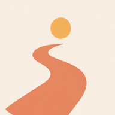

Statistiques du lien de la bio
Colle ta clé : elle est dans « Lien tableau de bord TikTok (secret).txt », dans ton dossier APP.
Cette clé ne marche pas.

Lien de ta bio
traverse-app.fr/app
Visites–
Depuis TikTok–
Vers l'App Store–
Passage–
Chaque jour
VisitesVers l'App Store
Heure des visites · Paris
Provenance
App
Appareil
Détail par jour
| Jour | Visites | TikTok | App Store |
|---|
« Vers l'App Store » : ouvertures dans Safari par les ••• de TikTok, et bouton touché hors de TikTok. « Passage » : la part des visites qui vont jusqu'à l'App Store. Les flèches comparent avec la période précédente de même durée. Les téléchargements sont dans App Store Connect › Analyses › Acquisition › Campagnes › « tiktok-bio ». Aucune donnée personnelle : ni cookie, ni adresse IP, ni identifiant.